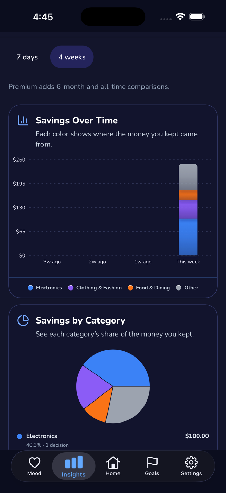
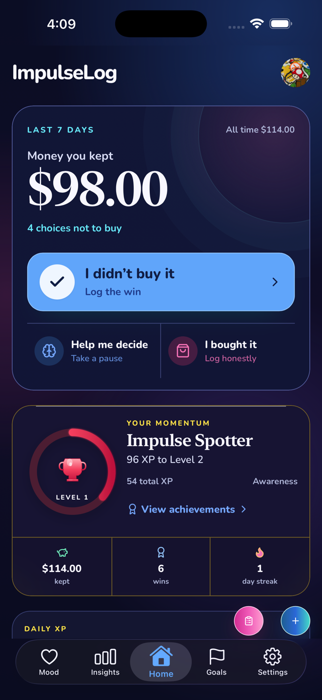

Create friction
The timer interrupts the speed of the purchase cycle before the cart becomes an automatic yes.
ImpulseLog gives you a simple pause between urge and checkout. Use a wait timer, log what you wanted, keep the item visible without immediately buying it, and decide later with more context than pure impulse.

The timer interrupts the speed of the purchase cycle before the cart becomes an automatic yes.
You can connect the urge, the item, and the outcome, which makes the delay measurable instead of theoretical.
Over time you can see which moods, categories, or contexts most often need that extra pause.

Instead of ending at “I waited,” the app turns that decision into progress across goals, streaks, and challenges.
That makes the wait timer more than a gimmick. You can actually see if it reduces spending across time and category.
Core logging, wait-timer oriented decision flow, goals, streaks, daily ritual, basic insights, export, and offline support.
Optional Premium AI insights, weekly summaries, pattern detection, mood correlations, and recommendations currently powered by gpt-5-mini.
This prototype is isolated from your SEObot flow. It adds a new static destination that blog posts can link into later if you decide the concept is worth integrating.